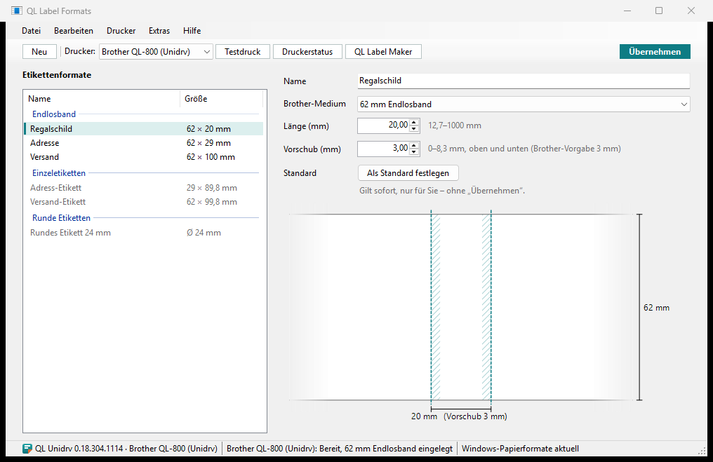

Etikettenformate für alle Programme
Mit QL Label Formats legen Sie Ihre Etikettenformate an: welche Rolle und welche Länge. Nach Übernehmen stehen sie in jedem Programm als Papierformat zur Wahl. Außerdem zeigt es, was Ihre QL-Drucker gerade tun, und richtet Drucker ein.

1 2 3 4 5 6- 1Leisteneues Format, Drucker für Testdruck und Rollenprüfung, Testdruck, Druckerstatus, Label Maker
- 2Übernehmenmacht die Formate in allen Programmen verfügbar
- 3Etikettenformatenach Endlosband, Einzeletiketten und runden Etiketten; fett: Ihr Standard; grau: passt nicht zur eingelegten Rolle
- 4EinstellungenName, Brother-Medium, Länge, Vorschub, Standard
- 5Vorschaudas Etikett mit seinen Maßen
- 6StatusleisteVersion und QL-Drucker, eingelegte Rolle, ob Windows die Formate kennt